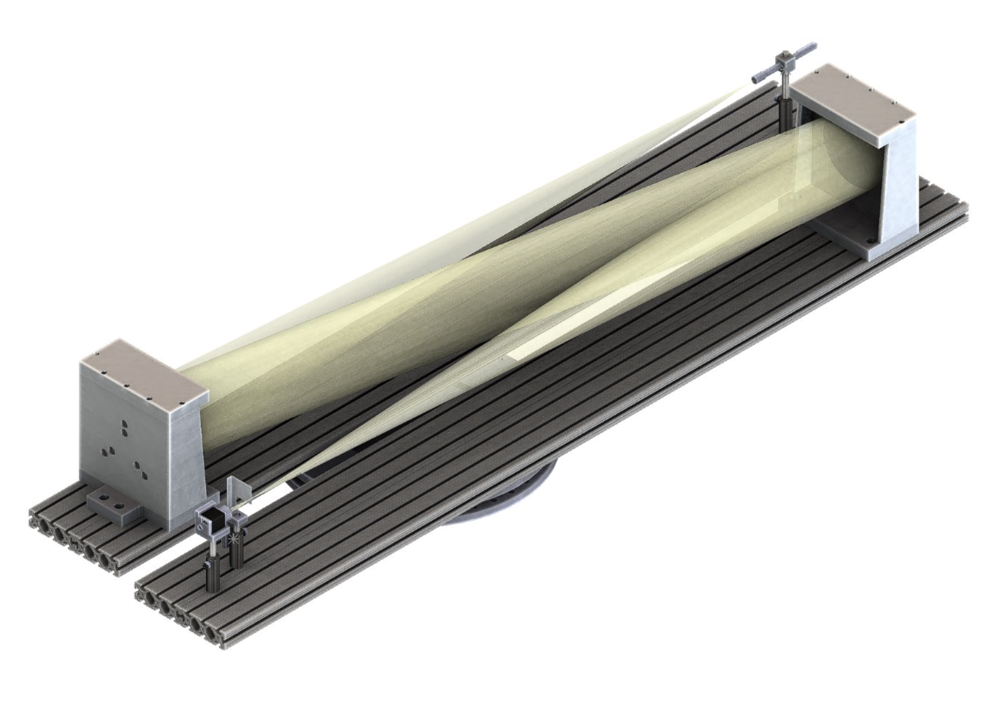
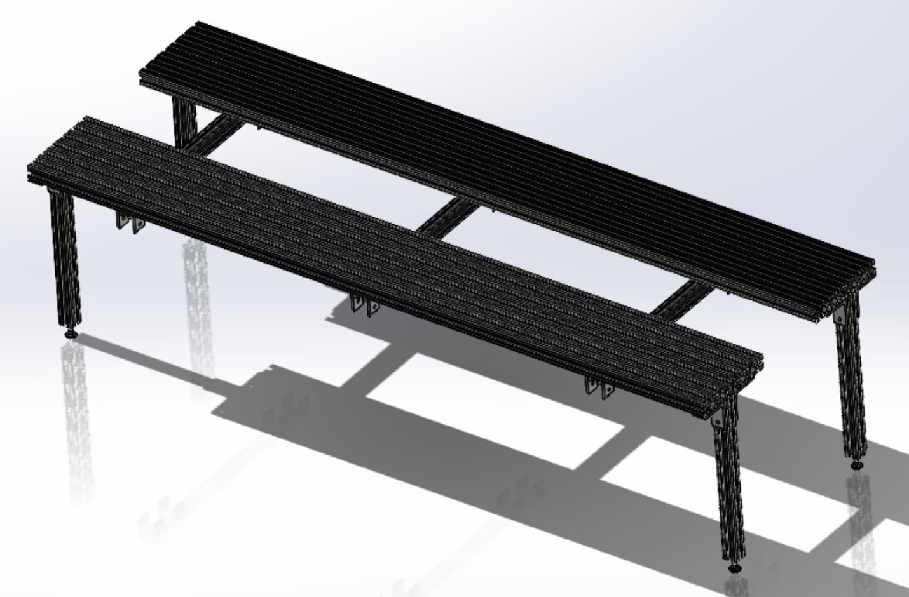

Schlieren Imaging System
GT Advanced Manufacturing Pilot Facility


Overview
- Visualize behavior of Argon carrier gas during Directed Energy Deposition (DED) metal additive manufacturing (AM)
- Schlieren imaging technique visualizes changes in refractive index: density, temperature, composition
- Provide insight into pressure and flow inconsistencies that can possibly affect print quality
- A custom, rotatable system to install inside DED printers was developed
Key Results
- Designed and manufactured critical components for optical imagery system
- Translated experimental requirements into manufactured hardware, factoring in constraints
- Conducted tests on DED system, gathering important information for further analysis
- Gained knowledge of Schlieren imaging and optical systems
- Gained experience working with industrial DED additive manufacturing systems
My Role
Design & Prototyping
- Designed multiple custom mounts and adapters in SolidWorks
- Identified system requirements: stability, adjustability, and manufacturability
- Used DFM and DFA principles to standardize hardware, simplify manufacturing, and improve alignment
- Created 3D printed prototypes to validate designs prior to manufacturing
Manufacturing & Integration
- Machined certain components using bandsaws and mills
- Produced manufacturing-ready drawings for all system components
- Produced additional documentation for future reference
- Supported machining a rig to adapt Schlieren platform to a second DED AM system, fitting in tight geometric constraints
Setup, Research, and Testing
- Calibrated critical system components: light souce, mirrors, knife edge, and camera
- Optimized components orientation and positioning for best view with minimal optical distortion
- Conducted experiments on Optomec LENS system across multiple nozzle geometries, angles, and operating environments (air and argon)
- Captured and organized video footage for further analysis
Skills
SolidWorks
DFM
DFA
Rapid Prototyping
Machining
Manufacturing Drawings
Research Experimentation